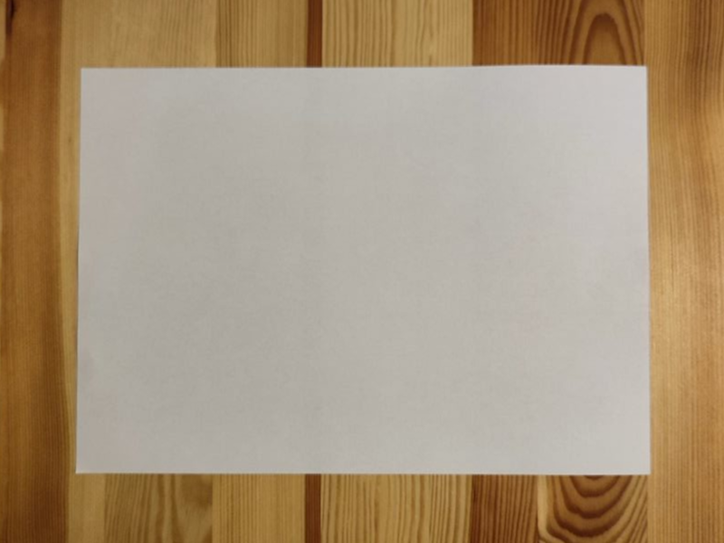
Rozpoczynamy od kartki formatu A
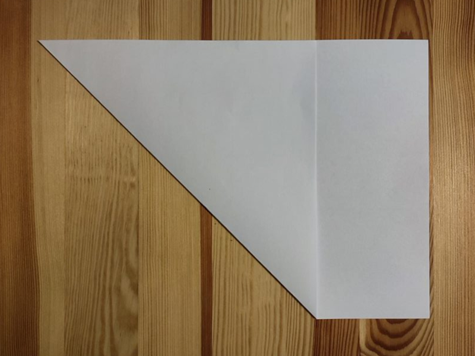
Zginamy jeden z rogów do dłuższej podstawy
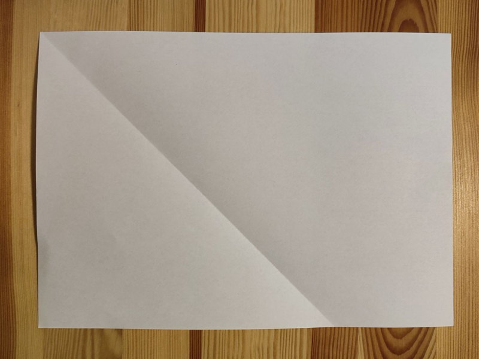
Odginamy
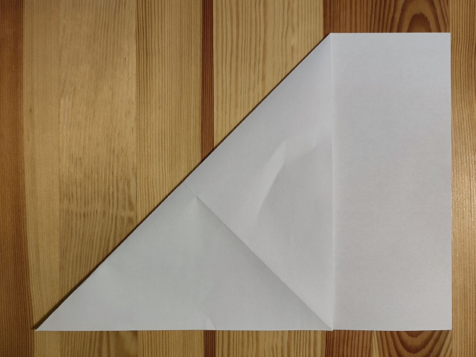
Tak samo zaginamy drugi róg
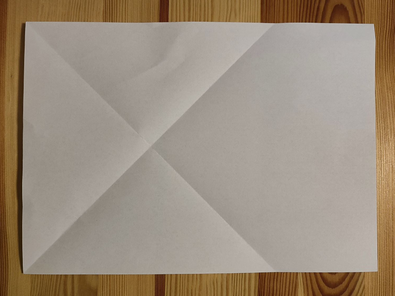
Również odginamy
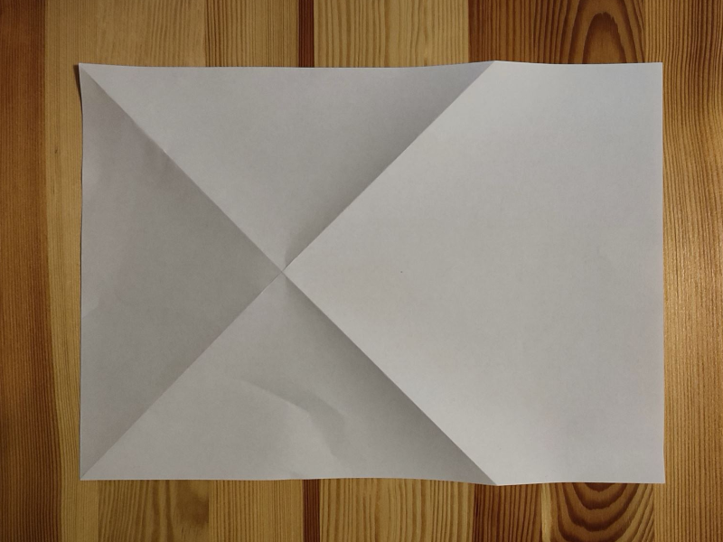
Przewracamy na drugą stronę
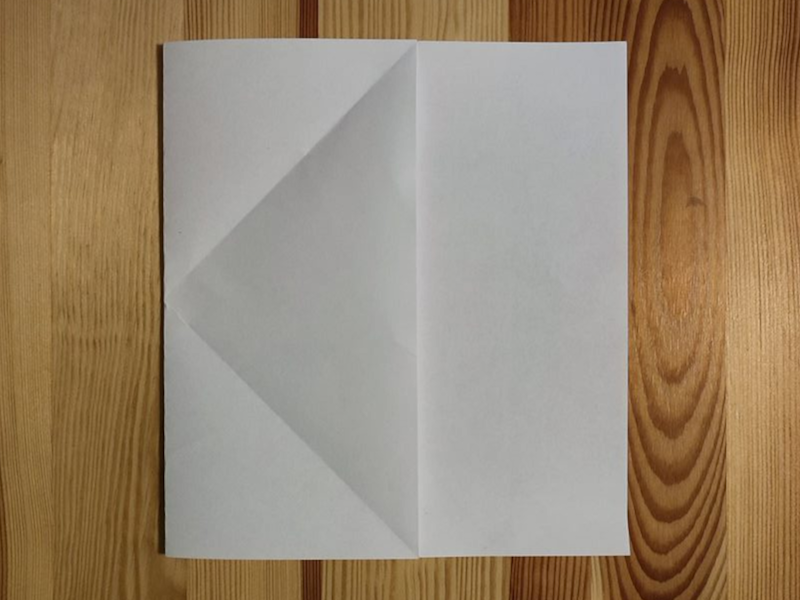
Zginamy tak aby rogi dotknęły końców wykonanych wcześniej zagięć, a przecięcie zagięć
znalazło się na brzegu
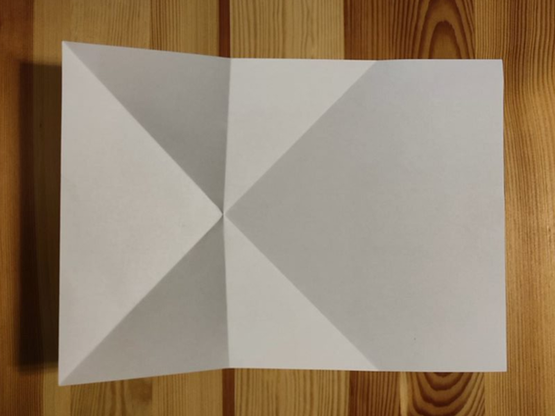
Odginamy
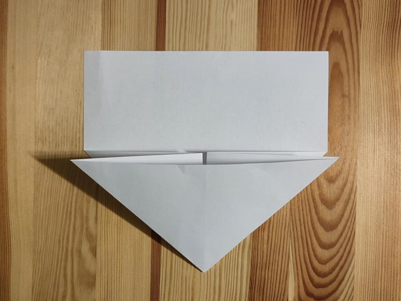
Pionowe zgięcia zbliżamy do siebie, wciskamy do środka mniejsze trójkąty
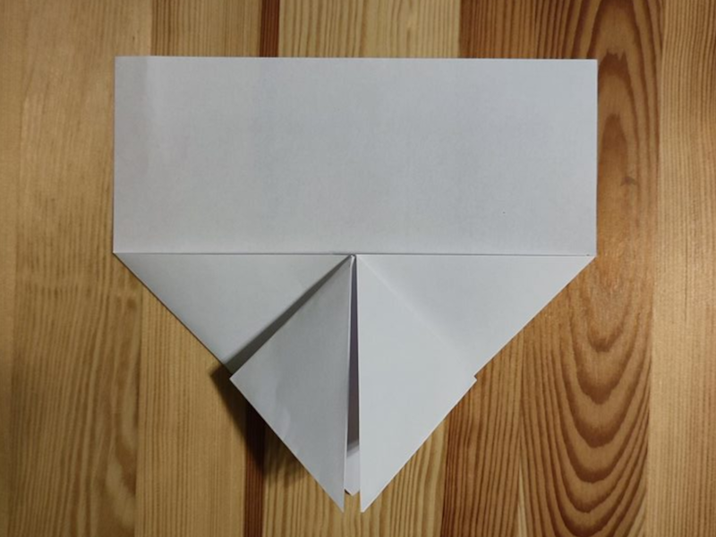
Zaginamy rogi do wierzchołka
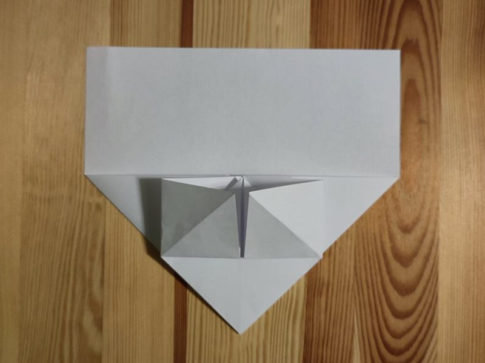
Spłaszczamy w kwadrat
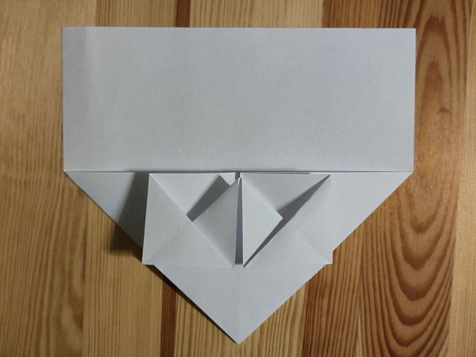
Odstające trójkąty odginamy
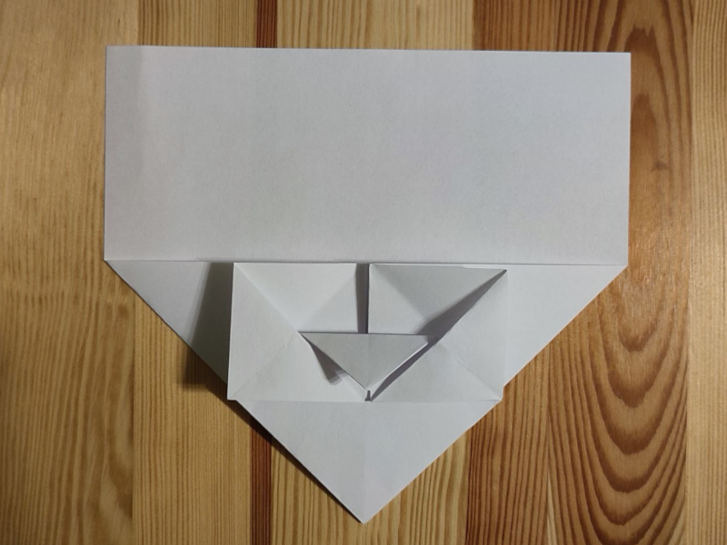
Środkowy trójkącik zaginamy na dół
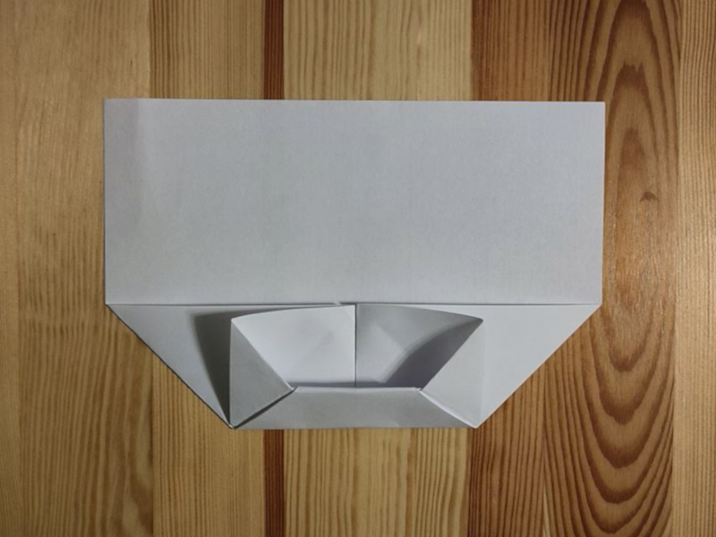
Dolny trójkąt zaginamy do góry i wsuwamy do kieszonki
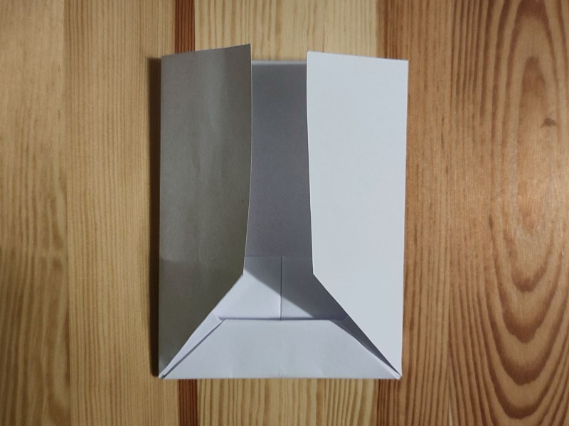
Boki zaginamy do środka
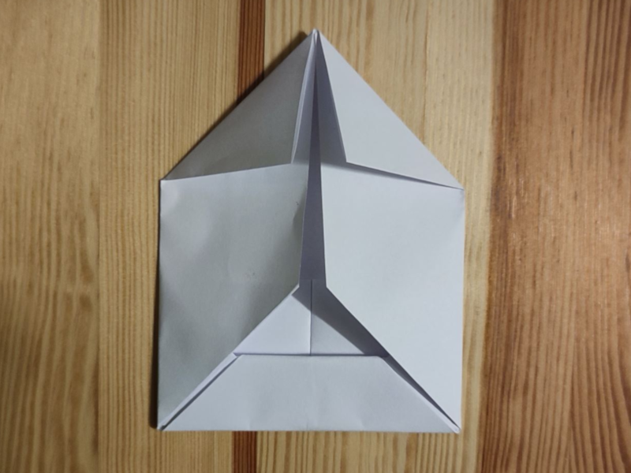
Na górze zaginamy rogi do środka
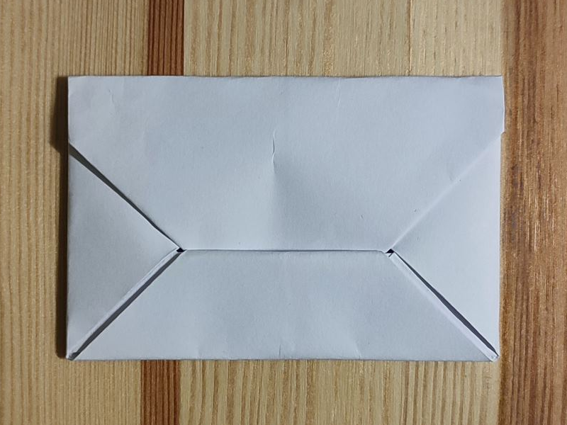
Wsuwamy do kieszonki i dociskamy Koperta jest gotowa!